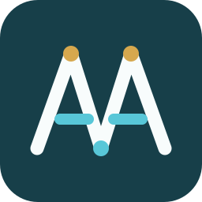
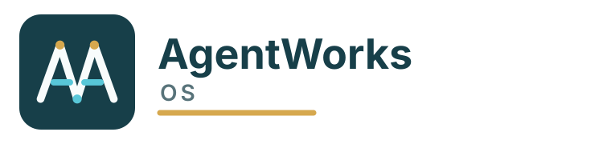
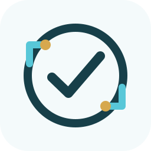

Direction 1: Gateway
Best fit for the public wedge: compliance firewall, policy gate, local control. Strongest customer-facing mark.
Three vector directions for a standalone product identity. The shared palette keeps enough SGRIDWORKS continuity for the portfolio, while the marks avoid internal substrate references and read as AgentWorks first.
Best fit for the public wedge: compliance firewall, policy gate, local control. Strongest customer-facing mark.
Best fit for orchestration: multiple agents moving through one operating layer. More product-platform, less compliance-heavy.


Best fit for audit trail and evidence reporting. The mark is obvious and reassuring, but less ownable.
